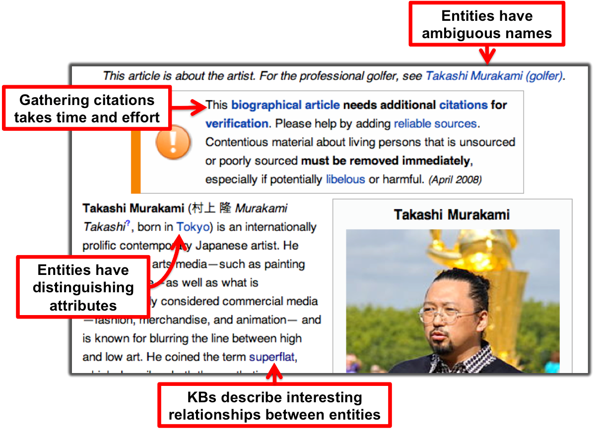

Background on KBA
Knowledge Base Acceleration (KBA) is an open evaluation in NIST's Text Retrieval Conference (TREC). KBA addresses this fundamental question:
filter a stream of documents to
accelerate users filling in knowledge gaps.
Specfically, KBA posses this question in a stream filtering context and uses entities (people, organizations, buildings) as the subjects of interest. The dossiers are profiles about the entities from a knowledge base (KB). As the stream of documents progresses, the entities change and evolve, so KBA systems must detect when vital, new information appears that would motivate an update to the KB.
KBA provides training data in the form of ground truth labels from the beginning of the stream. This simulates a human user training a filter with feedback (positive and negative examples) and then leaving the system to run open loop as the stream continues.
KBA provides a predefined list of entity profiles as query targets and a corpus organized in hourly batches of 105 texts. Considering each hourly batch in chronological order, KBA systems perform various knowledge discovery tasks -- see the specific measurement goals for each year's tasks.
Why streams and entities?
- The hourly structured of the KBA stream corpus allows entities to evolve. Unlike traditional filter topics defined by a list of keyword queries, entities are described by semi-structured articles in a knowledge base (KB) like Wikipedia, Facebook, LinkedIn, Crunchbase, etc. Such KB articles are more human-centric and also provide richer material for modeling.
What are knowledge bases and why accelerate them?
- A knowledge base is a database of content about entities and their attributes and relationships. For example, Wikipedia (WP) can be viewed as a knowledge base (KB) about the people, companies, groups, events, and other entities described by its articles. The links between Wikipedia articles are often labeled as signifying relationships, such as "X is an employee of Y," and the infoboxes on some WP pages list semi-structured attributes of the entity. In addition to Wikipedia, other KBs are an increasingly important part of workflows in biomedical research, financial market analysis, government, and other industries.
- The number of humans populating and maintaining a KB is generally much smaller than the number of entities that the KB intends to describe. This mismatch means that the human curators are always behind -- new knowledge about an entity often waits a long time before a human editor incorporates it into the KB. The KBA activity in TREC defines a set of well-posed research questions about how computer algorithms might help close this gap by automatically detecting new content about entities and recommending edits to the KB.
Here is an example of an entity from Wikipedia that illustrates several properties that make KBA research interesting:
KBA is related to several existing research activities in text analytics and text retrieval, including entity linking, relation extraction, knowledge base population, and topic detection & tracking. KBA combines elements of these lines of thinking by asking researchers to invent systems to participate in the human-driven process of assimilating information into a knowledge base (KB), like Wikipedia (WP) or Freebase (FB).
Incoming streams of new information are so large that even if a content routing engine perfectly connected each piece of inbound content with appropriate human curators and KB nodes, the humans would still fall behind. Thus, a routing system must actually run open loop without human feedback for extended periods of time accumulating evidence about entities in the KB.
The KBA track is a forum for examining issues related to creating such systems, including:
- While many news articles explicitly mention entities with WP nodes, some relevant articles do not. Detecting these articles and linking them to appropriate WP nodes requires more sophisticated filtering techniques than simple name matching.
- Important attributes of an entity might change before a human editor assimilates this new information into the KB. Thus, a KBA system may need to refer to its own proposed-but-not-yet-accepted edits in order to properly assess subsequent items in the stream.
- Only after sufficient evidence has accumulated should the system summon the scarce resources of human curators. How can one define "sufficient" evidence?
To begin studying these issues, we are generating a time-stamped corpus of Web, news, and social media over a multi-month period. We are in the process of creating training & evaluation data by manually labeling this corpus with passage selections associated with KB nodes. In future years, we may consider other knowledge bases and streams, such as the stream of new articles in PubMed and KBs about proteins.
For the first year of KBA (TREC 2012), we conducted a simple filtering task and had 11 teams submit runs from 43 algorithmic approaches. TREC KBA 2013 had 14 teams and more than 140 submissions. KBA is continuing in 2014.
Systems in KBA 2012 & 2013 used a variety of approaches. Given the large training set on some entities, machine learning approaches that used just words and phrases as features were often above the median in vital filtering. Given the rich structure of links in WP, mining rich features from the KB also performed well. Several teams explored temporality within the CCR context.